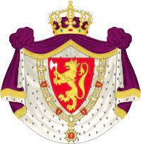

130816792300 Kung Stenkil

Barn med ?
Barn:
Inge "den äldre" Stenkilsson
Personhistoria
Årtal
Ålder
Händelse
1122
Barnbarnet
32704198075 Prinsessa Kristina Ingedotter
dör 1122 Kiev, Russia
[1]
Källor
[1]
Wikipedia